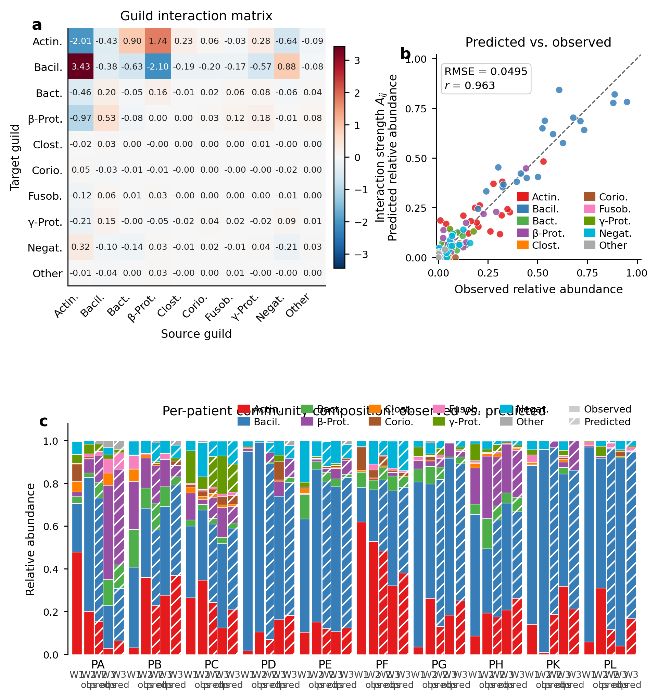
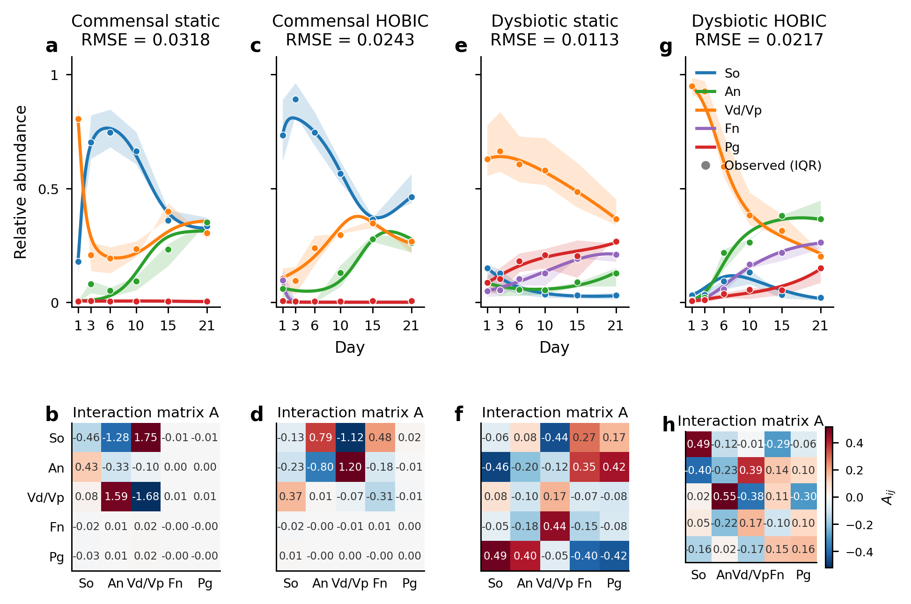

Ecological inference for peri-implant and in-vitro oral biofilm — gLV & Hamilton ODE
10-patient longitudinal cohort (ENA: PRJEB71108) · PacBio full-length 16S · 3 weekly time points · npj Biofilms & Microbiomes

| Method | Prior | RMSE | Notes |
|---|---|---|---|
| TMCMC joint (N=1000) | Flat | 0.101 | Shared A, patient-specific b |
| TMCMC joint (N=1000) | Bergey sign | 0.101 | Sign-constrained A |
| TMCMC joint (N=500) | Flat | 0.107 | Fewer particles |
| Adam per-patient | L2 λ=0.01 | 0.112 | Separate A per patient |
| MAP baseline | — | 0.113 | Heine DH fixed b |
| A source | b source | RMSE |
|---|---|---|
| Dieckow TMCMC (self) | Dieckow patient-specific | 0.101 |
| Heine CS A | Dieckow patient-specific | 0.102 |
| Heine CH A | Dieckow patient-specific | 0.102 |
| Heine DS A | Dieckow patient-specific | 0.103 |
| Heine DH A | Dieckow patient-specific | 0.103 |
| Heine CS A+b (fixed) | Heine CS fixed | 0.112 |
| Heine DH A+b (fixed) | Heine DH fixed | 0.136 |
ΔRMSE < 0.002 when patient-specific b is retained — confirms conserved interaction backbone across in-vitro and in-vivo.
Patients D, E, G, K, L | Bacilli 85±6% | Actinobacteria <10%
Streptococcal pioneers rapidly fill the niche.
Patients A, B, C, F, H | Bacilli 65±12% | Actinobacteria 25±8%
Delayed streptococcal dominance; stronger Actinomyces co-colonization.
5-species oral biofilm · 4 conditions (Commensal/Dysbiotic × Static/HOBIC) · N=9 replicates · 6 time points (d1,3,6,10,15,21)

S. oralis / A. naeslundii / V. dispar / F. nucleatum / P. gingivalis 20709
Flow reactor; stronger So dominance
V. parvula / P. gingivalis W83 (virulent strain)
Highest pathogen pressure; Pg W83
| Pair | Sign (all 5) | Mechanism |
|---|---|---|
| So–An | + (5/5) | Co-aggregation; metabolic complementarity |
| Vd–Pg | + (5/5) | Menaquinone supply → Pg anaerobic respiration |
| Fn–Pg | + (5/5) | Cooperative proteolytic cross-feeding |
| An–Vd | + (4/5), − Dieckow | V. dispar / V. parvula strain switch |
| So–Pg | + (4/5), − DH only | H₂O₂ inhibition of virulent Pg W83 |
| File | Description |
|---|---|
fit_guild_replicator.py | 10-guild gLV fit (L-BFGS-B, λ=1e-4) |
fit_glv_heine.py | Heine 5-species gLV fit (4 conditions) |
plot_guild_glv_paper.py | Paper-quality 3-panel figure (A-matrix, scatter, bars) |
plot_glv_heine_paper.py | Paper-quality Heine trajectory + heatmap figure |
aggregate_dieckow_guilds.py | Genus → 10-guild aggregation |
dieckow_ccs_pipeline.py | PacBio CCS → taxonomy TSV |
results/dieckow_cr/DATA_PROCESSING.md | Full pipeline documentation |
results/dieckow_cr/fit_guild.json | 10-guild A matrix + b_all + RMSE |
results/heine2025/fit_glv_heine.json | 4-condition Heine A matrices |
| Item | Details |
|---|---|
| Patients | A, B, C, D, E, F, G, H, K, L (10; I and J excluded) |
| Time points | Week 1, 2, 3 (30 samples total) |
| ENA accession | PRJEB71108 (ERR13166574–ERR13166603) |
| Sequencer | PacBio (long-read full-length 16S) |
| Reads/sample | ~7,000–15,000 (exception: D_1 = 452, 97.6% host contamination) |
| Classification | VSEARCH 97% identity vs SILVA 138.1 NR99 |
| Mean identity | ~98.4% (CCS vs SILVA) |